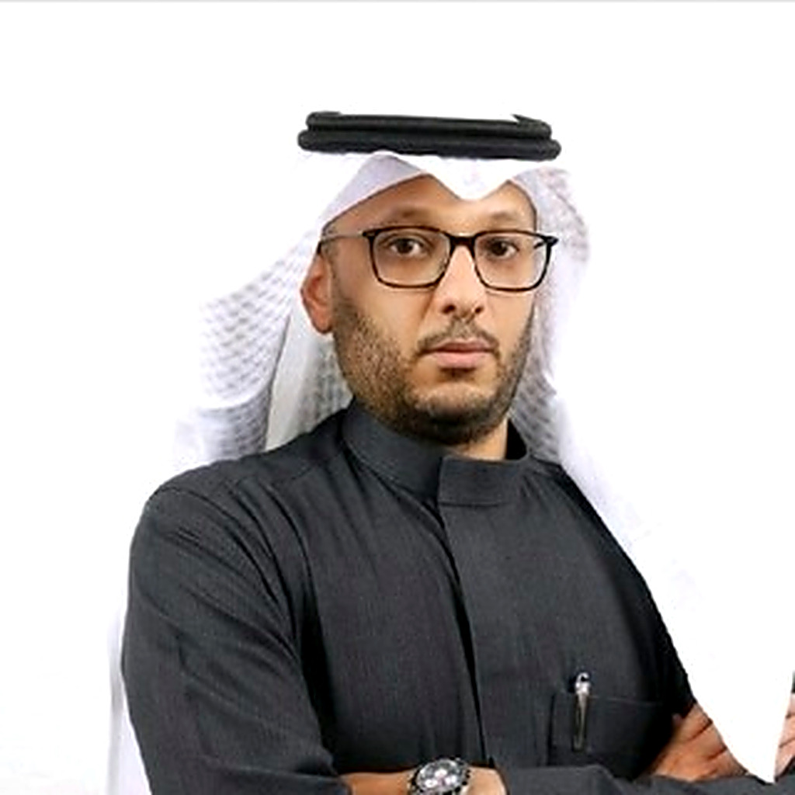

مدير عام تخطيط بناء القدرات في الذكاء الاصطناعي بسدايا (2025–26) ومستشارها حاليًا؛ مدير برنامج مؤتمر ICAN 2026؛ أستاذ مشارك في نظم المعلومات؛ دكتوراه من جامعة أوتاوا. وتحت ذلك عشر سنوات من الاستشارات في الابتكار والتحول الرقمي.
الآن · أكتوبر 2026 — أجهّز اختبارات الدفعة الثانية من الشارات الوطنية للذكاء الاصطناعي مع جامعة الملك سعود؛ وأراجع ملفات الباحثين مع اللجنة الدولية.
البرامج التي قادتها استراتيجيتنا درّبت أكثر من 1,000,000 مواطن ووصلت إلى 590,000 طالب ومعلم. مؤتمر ICAN 2026 استقطب أكثر من 30,000 حضور واختُتم بـ27 اتفاقية. ومعايير البحث والابتكار التي شاركتُ في تطويرها تقيّم أكثر من 230 جهة كل دورة. و30 ورقة في مجلات محكمة تُبقي الممارسة صادقة.

قضيتُ عقدًا في معمل اكتشاف المعرفة وتنقيب البيانات بجامعة أوتاوا أتعلّم كيف تجد الآلة الخدمة المناسبة بين آلاف الخدمات. وحين عدتُ إلى الرياض وضعتُ هذا الانضباط في مسألة اكتشافٍ أصعب: إيجاد الأشخاص الذين تعتمد عليهم استراتيجية وطنية للذكاء الاصطناعي، وتنميتهم، واعتمادهم.
الخيط الواحد حاضرٌ في كل مكان — في جهة تنظيمية تصمّم نموذج ابتكارها، وفي هيئة الحكومة الرقمية حين كتبنا المعايير التي تُقاس بها كل جهة، وفي سدايا حين خططنا كيف يتعلّم مليون مواطن الذكاء الاصطناعي: ابنِ المعيار أولًا ثم البرنامج، ليبقى ما تبنيه بعدك.
الاستراتيجية والسياسات والحوكمة لمنظومة مواهب الذكاء الاصطناعي في المملكة: تحليل فجوات المهارات، مسارات تعلّم من المدرسة إلى التنفيذيين، شراكات مع 14 جامعة، والشارات الوطنية التي تعتمد مهنيي الذكاء الاصطناعي.
الأعمالنماذج الابتكار وأدلّته (هيئة الاتصالات)، أنظمة إدارة الأفكار من الفكرة إلى التوسّع (وزارة الداخلية)، ومعايير البحث والابتكار التي تُقاس بها كل جهة حكومية (قياس). ISO 56002، التفكير التصميمي، تقييم النضج.
الأطر والمعاييرثلاثون ورقة محكمة في الذكاء الاصطناعي للرعاية الصحية والصناعة، وأمن إنترنت الأشياء، وتبنّي البلوك تشين، واكتشاف خدمات الويب؛ الإشراف على خمس رسائل ماجستير؛ أستاذ مشارك في نظم المعلومات.
المنشوراتثلاثة مسارات، أكثر من 360 سؤالًا مراجَعًا من خبراء، لجنتان إشرافيتان تضمّان تسعة علماء، و5,319 متقدمًا في الدفعة الثانية.
دراسة الحالة (بالإنجليزية)مدير البرنامج وعضو اللجنة التنفيذية: أكثر من 30 ألف حضور، 64 متحدثًا، 27 اتفاقية، مذكرات تفاهم مع 14 جامعة، وشراكة مع HUMAIN.
دراسة الحالة قيد الإعدادمسارات التعلّم والشراكات الأكاديمية وأطر القياس خلف برامج درّبت أكثر من مليون مواطن و590 ألف طالب ومعلم.
دراسة الحالة قيد الإعدادخمسة معايير تُطبّق على كل جهة حكومية؛ أكثر من 230 جهة تُقيَّم في كل دورة؛ اعتُمدت ضمن المعايير الأساسية v5.0.
دراسة الحالة قيد الإعدادنموذج تشغيلي قائم على التفكير التصميمي، معمل ابتكار، ومحفظة 2023: 10 نماذج أولية و8 أوراق بيضاء.
دراسة الحالة قيد الإعدادقمع الأفكار، الحضانة، النماذج الأولية، التوسّع — مع حوكمة التشغيل (الأدوار، الأولويات، اللجان).
دراسة الحالة قيد الإعدادالمشاركة في تصميم وإطلاق الماجستير التنفيذي في التحول الرقمي وفي التقنية المالية، وتدريس أولى مقرراتهما.
صفحة البرنامج قيد الإعدادأطر كفايات الشارات الوطنية (قيادة) · معايير البحث والابتكار في قياس 5.23–5.24 (مشاركة في التطوير) · التصنيف السعودي الموحد للمستويات والتخصصات التعليمية (اللجنة الفنية الدائمة، ممثلًا لسدايا) · نموذج الابتكار والدليل التطبيقي لهيئة الاتصالات (قيادة).
نائب رئيس مجلس إدارة جمعية الذكاء الاصطناعي (2025– ) · اللجنة التنفيذية ومدير برنامج ICAN 2026 · المجلس القطاعي للمهارات للقطاع الرقمي، ممثل سدايا بالنيابة (2025) · المجلس الاستشاري لبرنامج نظم المعلومات الإدارية، جامعة الأمير محمد بن فهد (2023–26) · لجنة المناهج، جامعة الإمام.
دكتوراه التحول الرقمي والابتكار، جامعة أوتاوا (2021) · ماجستير تقنيات الأعمال الإلكترونية، جامعة أوتاوا (2013) · بكالوريوس نظم المعلومات، جامعة الإمام (2008، الأول على الدفعة).
الجهات
13 مقررًا من البكالوريوس إلى الماجستير التنفيذي · 5 رسائل ماجستير · مشاريع تخرج كل فصل منذ 2021. الطلاب والتدريس
ثمانية مواضيع متاحة للرسائل في الذكاء الاصطناعي التطبيقي وأمن إنترنت الأشياء والبلوك تشين والحكومة الرقمية. المواضيع
ORCID 0000-0002-5086-3950 · Scopus 55838260600 · ResearcherID J-3112-2019
ستظهر هنا شهادات من زملاء في سدايا وهيئة الاتصالات/الحكومة الرقمية وجامعة أوتاوا.
“…”
“…”
نبذة في 50 و150 و300 كلمة (عربي/إنجليزي) · صورة عالية الدقة · المسميات والانتماءات الرسمية · موضوعات الحديث. قريبًا.
متاح للأدوار التنفيذية والاستشارية، والمشاركة في المؤتمرات، والتعاون البحثي، والشراكات في بناء القدرات في الذكاء الاصطناعي وإدارة الابتكار والتحول الرقمي — في السعودية وكندا.